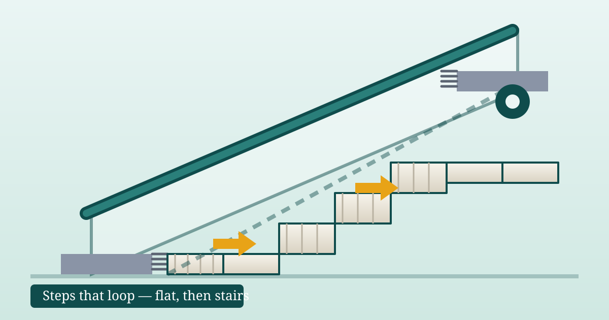

How Do Escalators Work?

You step onto a flat metal plate, and the floor starts moving under your feet. A moment later you are standing on a staircase that climbs by itself, carrying you to the next floor while you do nothing at all. It feels like a trick, yet escalators are so common in stations, malls, and airports that most of us ride them without wondering how they work.
The short answer is that an escalator is a loop of steps running on a track, like a chain going round and round. At each end the steps flatten into a moving walkway so you can step on and off safely, and a motor drives the whole loop at a steady walking pace. The handrail beside you is part of the same machine, built to travel at exactly the same speed.
The Loop of Steps That Never Ends
An escalator is not a staircase with a motor bolted on. It is a continuous loop of separate steps, each one fixed to a chain, running around two big sprocket wheels — one at the top, one at the bottom. The steps you stand on are only the top half of the loop; underneath, the same steps travel back down, hidden inside the machine.
Each step is a small grooved platform with a raised front edge, linked to its neighbours by a step chain. An electric motor, usually at the top, pulls the chain and drags the steps along a steel track up the incline. At the top sprocket each step turns round the wheel and travels back underneath to start again.
How the Steps Flatten at Each End
Each step has small wheels that run in two separate tracks: one guides the front of the step, another the back. On the flat landing sections the two tracks run at the same height, so the steps sit level and form a smooth moving walkway. As the escalator starts to climb, the back track drops away, and each step tilts into its stair shape — then levels out again at the top landing.
At the very edge of each landing sits a comb plate, a toothed metal plate whose teeth mesh with the grooves on the steps. The comb bridges the small gap between the moving steps and the fixed floor, so shoes and wheels are guided smoothly across instead of catching in the join. Step over the comb line rather than stand on it: it is where the moving parts meet the fixed floor.
The Handrail That Keeps Up With You
The handrail is not just a rail to hold. It is a second moving loop, built to travel at the same speed as the steps so that your hand and your feet move together. If it ran at a different speed, you would feel it tugging your hand forward or dragging it back.
The handrail is a rubber belt running round a loop of its own, guided along the balustrade — the glass or metal panels at the sides. It is usually driven by the same motor, through a friction wheel or a chain drive, which is how the two speeds stay matched. Sensors check that constantly: if the handrail slows down relative to the steps, the monitor detects the mismatch and stops the escalator. A lagging handrail is one of the most common reasons an escalator shuts itself down.
What Holds It All Up: The Truss
Underneath the steps, the handrails, and the panels sits the truss — a rigid steel frame that carries the whole machine. It spans the gap between the two floors and supports the weight of the steps, the motor, and hundreds of passengers at once.
The motor, the gear, and the main drive sit at the top of the truss, hidden under the floor plate. Some escalators put the drive at the bottom instead, but top drive is more common because gravity then helps keep the step chain tight. The panels and cladding all bolt onto the truss, and the whole assembly is usually installed as one piece, lifted in by crane. That is also why replacing an escalator is a major job: the old truss comes out and a new one goes in.
Why Escalators Run at That Speed
Most escalators travel at about half a metre per second — roughly a slow walking pace — and most climb at 30 degrees. The speed is a compromise. Faster would move more people, but stepping onto a fast-moving plate is harder, especially for older people, children, and anyone carrying bags. Slower would be safer still, but queues would build up at busy stations.
A standard one-metre-wide escalator can carry several thousand people an hour in theory, though in practice the flow is lower, because people leave gaps and take a moment to step on. That is why busy stations often install escalators in pairs — the machine's capacity is rarely the limit; the crowd's behaviour is. Many modern escalators also save energy when nobody is riding: sensors watch the landings, and an empty escalator slows to a crawl or stops, then speeds back up gently as the next passenger approaches.
The Safety Layers You Never See
Behind the panels there are many more, starting with the red emergency stop button at each landing, which cuts power to the motor and brings the steps to a controlled stop. Sensors watch the comb plates: if something jams between the comb and a step, the escalator stops before it can drag anything in. Others monitor the step chain for a broken link, the steps for sagging, the handrail for a speed mismatch, and the skirt panels for anything trapped. If any of them trips, the machine stops.
There is also a brake on the motor, separate from the power supply. If the power fails, the brake holds the steps still rather than letting them roll backwards under the passengers' weight. That is why a stopped escalator feels so firm underfoot: it is designed to become a safe, ordinary staircase the moment anything goes wrong. Treat it as one, and never try to restart it yourself.
Common Mistakes
The most common mistake is standing on the very edge of the steps. The steps are safest in the middle: the sides have a small gap next to the skirt panels, and shoes, loose clothing, and bag straps can catch there. Stand in the centre, face forward, and hold the handrail.
Another mistake is stepping onto the comb plate instead of over it. The comb is where the moving steps meet the fixed floor, and standing on it puts your feet on the one part that does not move with you. Step past the comb line onto the flat steps, and step off the same way at the other end.
Finally, do not let children sit on the steps or ride the handrail. The steps are moving machinery with gaps and pinch points, and small fingers and loose clothing are exactly what the safety sensors are designed to protect.
Frequently Asked Questions
Can an escalator run backwards?
Most escalators can run in either direction, and many are reversed at different times of day — up in the morning rush, down in the evening. The direction is set by the operator, and some switch automatically based on sensors that count which way people are walking.
Why do some escalators have a flat section in the middle?
Very long escalators, such as the ones in deep underground stations, sometimes have a flat section halfway up, where the steps level out before climbing again. It gives passengers a moment to steady themselves and breaks the climb in two. The longest rise more than 60 metres in a single run.
What happens if the power goes out while you are on an escalator?
Nothing dramatic. The brake engages and the steps stop where they are, held firmly in place. You are standing on a locked staircase, so walk up or down to the nearest landing, holding the handrail.
Why are escalator steps grooved?
The grooves serve two purposes. First, they give your shoes grip, so wet or smooth soles are less likely to slip. Second, they mesh with the teeth of the comb plate at each landing, guiding your feet smoothly onto the fixed floor. Without the grooves, the comb could not bridge the gap, and the join would be a tripping hazard.
Conclusion
An escalator is a loop of steps on a chain, driven by a motor and guided by tracks that flatten the steps into a walkway at each end so you can step on and off. The handrail runs on its own loop at exactly the same speed, the truss carries the whole machine between the two floors, and hidden sensors and brakes keep it safe, stopping it the moment anything goes wrong. It is a staircase and a conveyor belt in one: moving people between floors while they stand still.